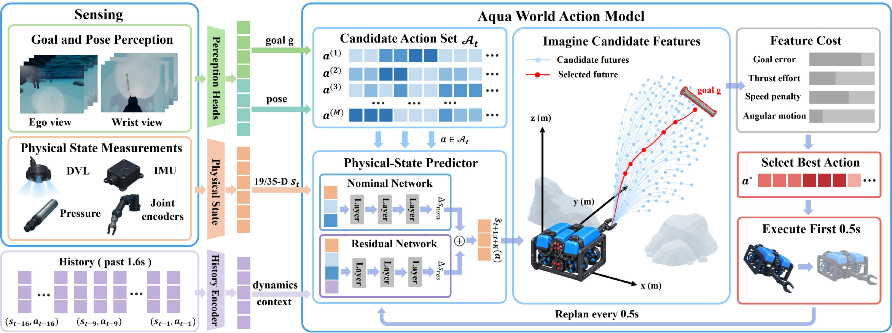
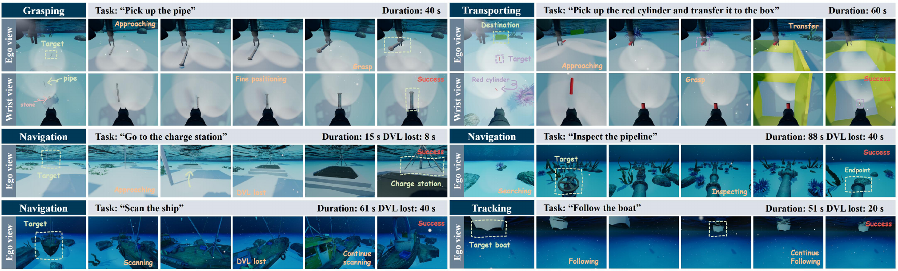
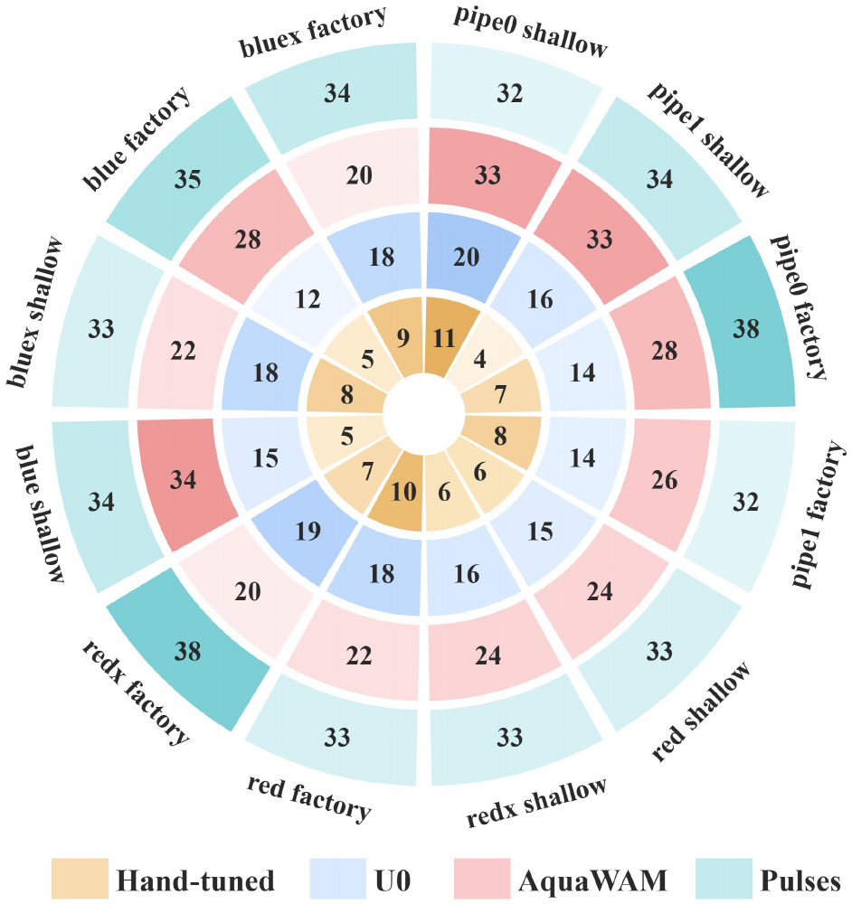
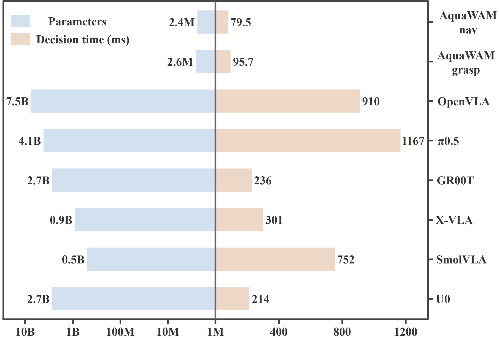
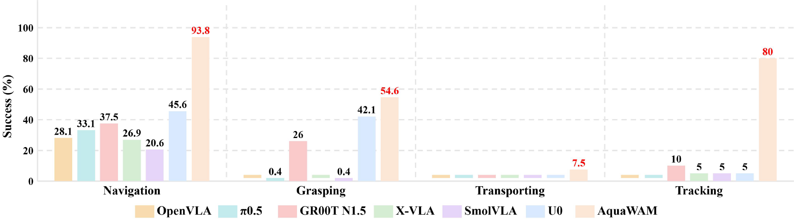

AquaWAM: A Dynamics-aware World Action Modelfor Underwater Embodied Agents
1 Shandong University
2 Beijing Institute of Technology
Wreck footage by Jun Ho Lee, Pexels. Not a USIM simulation.
Abstract
World Action Models (WAMs) are becoming increasingly important and useful for embodied intelligence, as they enable robots to anticipate the consequences of candidate actions before interacting with the physical environment. However, underwater robots are usually subject to passive dynamics, such as inertia, buoyancy, hydrodynamic drag, and persistent drift, which can continue to affect the vehicle even after an action is completed. Existing WAMs, which primarily predict action-conditioned visual observations, are not explicitly designed to capture such passive motion dynamics. In this paper, we present AquaWAM, the first World Action Model designed for underwater embodied agents. Instead of predicting future images, AquaWAM models both action-conditioned and passive physical dynamics, including the thruster dead band, the inertial glide that outlasts each command, and ambient currents.
Specifically, it senses through the DVL, IMU, pressure sensor and joint encoders, while cameras supply only semantics for understanding goals and target pose. By modeling compact navigation states rather than high-dimensional visual observations, AquaWAM substantially reduces the model size and computational cost compared with conventional WAMs. Experimentally, AquaWAM achieves a 72.6% task success rate across 20 underwater tasks on the USIM benchmark, outperforming existing methods while making action decisions 2.7× faster than U0 on an NVIDIA Jetson AGX Orin. Our model also remains effective when some onboard sensor measurements are unavailable. For example, without DVL velocity measurements, our method still achieves a 61.6% success rate, compared with 39.4% for U0.
Method
AquaWAM keeps the interface of the VLA baselines: the same two cameras, DVL, IMU, pressure sensor and joint encoders come in, and the same thruster and joint commands go out. What changes is how a command is chosen. A single physical-state predictor forecasts a 19-dimensional vehicle state, or 35 dimensions within reach of an object, two seconds ahead. A disturbance token computed from the last 1.6 s of history captures the ambient current and each thruster’s efficiency. Glide, dead band, buoyancy and drag are learned from demonstrations and task-agnostic play, not hand-coded.
There is no action head. Every half second AquaWAM rolls out 128 candidate commands, scores the predicted futures, and executes only the first 0.5 s of the best. Within reach of an object, the candidates become short thrust pulses followed by a coast, each scored by where its glide ends, so every pulse crosses the dead band. Cameras only supply the goal and the target pose. When the DVL loses bottom lock, the same network estimates velocity from the masked history.

Results
Table 1 of the paper. Succ. is the number of successful trials. SPL and ASD follow the USIM definitions. Green is best, pale green is second-best.
| Model | Navigation | Grasping | Transporting | Tracking | Overall | |||
|---|---|---|---|---|---|---|---|---|
| Succ. ↑ | SPL ↑ | Succ. ↑ | ASD (s) ↓ | Succ. ↑ | SSR ↑ | Succ. ↑ | SR ↑ | |
| OpenVLA | 50/160 | 0.71±0.19 | 0/480 | — | 0/40 | 0.0% | 0/20 | 7.1% (50/700) |
| π0.5 | 58/160 | 0.59±0.19 | 1/480 | 87.3 | 0/40 | 0.0% | 0/20 | 8.4% (59/700) |
| GR00T N1.5 | 122/160 | 0.78±0.23 | 140/480 | 102.2 | 10/40 | 32.5% | 4/20 | 39.4% (276/700) |
| X-VLA | 85/160 | 0.64±0.24 | 4/480 | 63.5 | 0/40 | 0.0% | 1/20 | 12.9% (90/700) |
| SmolVLA | 74/160 | 0.64±0.25 | 7/480 | 94.7 | 0/40 | 5.0% | 1/20 | 11.7% (82/700) |
| U0 | 140/160 | 0.75±0.24 | 195/480 | 99.8 | 13/40 | 52.5% | 14/20 | 51.7% (362/700) |
| AquaWAM | 151/160 | 0.84±0.21 | 314/480 | 62.9 | 23/40 | 65.0% | 20/20 | 72.6% (508/700) |
Main results
With full sensing, AquaWAM succeeds in 72.6% of 700 trials, against 51.7% for U0. Grasping rises from 40.6% to 65.4%, transporting from 32.5% to 57.5%, tracking from 70% to 100%, and navigation from 87.5% to 94.4%. Successful grasps take 62.9 s, against 99.8 s for U0. Navigation SPL is 0.84, the highest in the table.

Grasp experiments
This experiment asks where the grasping margin comes from. U0 succeeds in 12 to 20 of 40 trials on each object. AquaWAM succeeds in 20 to 34, and leads on every object. With the benchmark’s own object pose, so that perception plays no part, predicted pulses grasp in 85.2% of 480 trials and a hand-tuned positioning law in 17.9%. Only 24% of that law’s trials enter the closure window. AquaWAM reading the wrist camera, rather than the benchmark pose, grasps in 65.4%.
Computation
On a Jetson AGX Orin, scoring 128 candidates two seconds ahead takes 22 ms, and a pulse decision takes 19 ms. With the perception heads included, a decision costs 79.5 ms in navigation and 95.7 ms in grasping, which is 2.7× faster than U0’s 214 ms. The 2.4 million and 2.6 million parameters are the predictor. Each DINOv2-base perception backbone adds 86 million, and that time is included in the AquaWAM bars.


When the DVL fails
The DVL loses bottom lock partway through every trial and does not recover. U0 falls from 51.7% to 39.4%: navigation from 87.5% to 45.6%, tracking from 70% to 5%, grasping holds at 42.1%. AquaWAM keeps 61.6%: navigation 93.8%, tracking 80%, grasping 54.6%. Transport after a 2.9 m carry is 7.5% against 0%. As a takeover layer for U0, the same estimator lifts U0 from 39.4% to 49.7%.

Extreme cases
The main judges are already near the ceiling, so this experiment tightens the judges and perturbs the world. AquaWAM leads the 1.0 m waypoint judge, 61 of 80 against 53, and ties U0 at 0.5 m, 44 each. With the DVL lost it still leads the 0.5 m gotos, 45 against 28, and the inspections, 39 of 40 against 7. It also leads every perturbed world, including half thrust and turbid water. A thruster that delivers nothing, unseen in play, leaves 4 of 40 gotos against 1 for U0.
| Perturbed world | U0 | AquaWAM | Stricter judge | U0 | AquaWAM |
|---|---|---|---|---|---|
| Start heading rotated 90–180° | 52/80 | 63/80 | Goto, all waypoints within 1.0 m | 53/80 | 61/80 |
| Goto endpoint within 0.5 m, not 1 m | 26/40 | 35/40 | Goto, all waypoints within 0.5 m | 44/80 | 44/80 |
| Thruster 3 at 50%, seen in play | 3/40 | 30/40 | Goto, 0.5 m waypoints, DVL loss | 28/80 | 45/80 |
| Thruster 1 at 50%, unseen | 4/40 | 21/40 | Goto, all waypoints within 0.25 m | 25/80 | 24/80 |
| Thruster 1 at 0%, unseen | 1/40 | 4/40 | Inspect, 1 m ball, 90% coverage | 36/40 | 39/40 |
| Turbid water, Jerlov 0.50 | 1/20 | 9/20 | Inspect, same judge, DVL loss | 7/40 | 39/40 |
USIM-Hard. Left: 20 trials per task in a perturbed world. Right: stricter judges re-score the main trials, and the DVL-loss rows re-score the dropout trials.
Underwater Scenarios
Pick a scene below. Cards marked 7 models play all seven policies on the same task and episode index; each panel freezes when its run ends, at 2× until the last success and 16× after (scan uses 8×). Cards marked AquaWAM show AquaWAM alone at 2×, on episodes not recorded for the other models.
Selected episodes, not the benchmark average. Success rates are in Tables 1 and 6. A shared episode index is not claimed to be an identical rendered first frame.
Acknowledgement
AquaWAM is evaluated on the USIM benchmark and compared with U0. We thank Junwen Gu, Zhiheng Wu, and coauthors for USIM and U0 and the U0 dataset.
BibTeX
Code, play data and trained models will be released with the paper.
@misc{zhu2026aquawam,
title = {AquaWAM: A Dynamics-aware World Action Model for Underwater Embodied Agents},
author = {Zhu, Cunhao and Wang, Yifeng and Xu, Dongliang and Hou, Yunzhong and Yao, Yue and Liu, Chi Harold},
year = {2026}
}